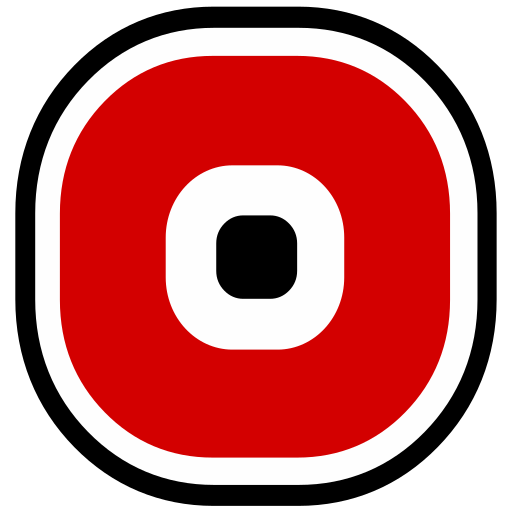
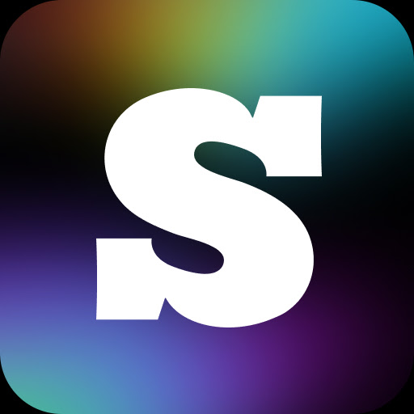
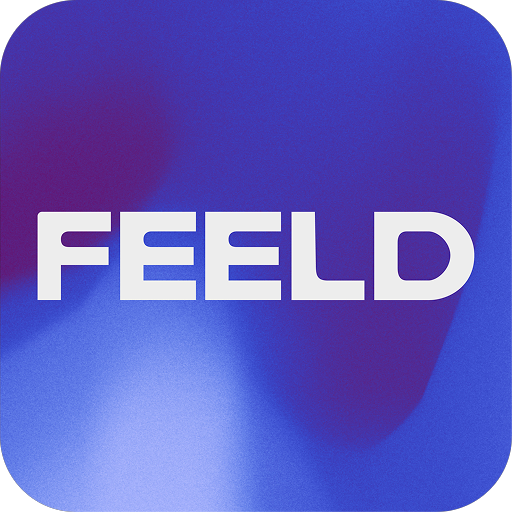
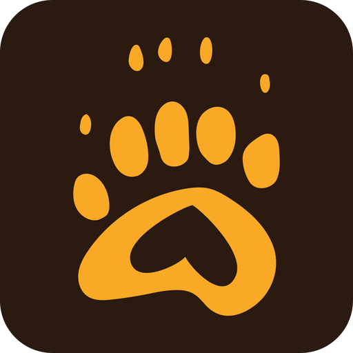
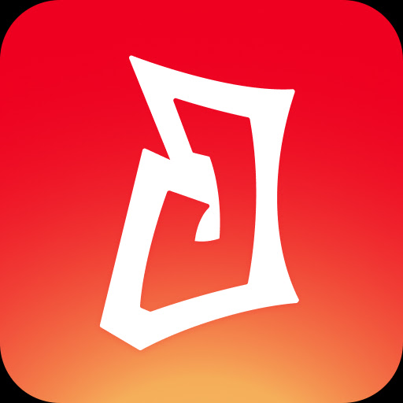
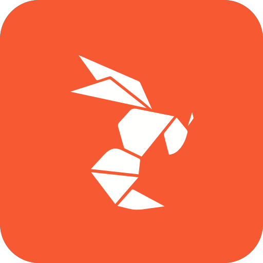

Approval mockup only — no app code changed. Dark mode, 393dp phone viewport, synthetic contact and illustrated placeholder portrait. Shows role/position, bike + hosting + outdoor/public markers, Android/PWA icons and encounter summary.
Proposed render
Transport/accommodation starts at the pronouns line on the right. Social badges sit beside the status tags and wrap onto the next right-hand row alongside relationship tags when crowded.
Contacts
Kai😍· 34Leeds
They/them
IncompleteSearch match
FriendSubTop
Usually Mon–Fri evenings · Sat afternoons
12 encounters·84/100 avg.·Last met 4 days ago
For approval: synthetic portrait; bike + host + proposed outdoor/public tree markers on the right, with the applicable travel-mode icon (car, bike, bus or walk); social badges below. The first icon row begins level with pronouns. “Incomplete” and “Search match” are flush-left on their own line, above neutral relationship/role/position chips. The red outline on “Incomplete” is a proposal only. The bottom line adds encounter count and a rated-only enjoyment average. Android/PWA platform icons are preview assets only; none have been added to the app.
Availability — optional card summary and future filter
This is a design concept, not a working filter. The compact line is optional; leaving it off keeps the card uncluttered. Proposed filters apply only to contacts with a saved weekly schedule.
Available nowSoon · next 24hAt a set time…
Weekly availability
Times use each contact’s local timezone
MTuWThFSaSu
18:00–22:00
MTuWThFSaSu
14:00–18:00
＋ Add weekly time window☑ Show summary on cards
Date-specific exceptions＋ Add one-off
Suggested cleanup: replace overlapping broad availability tags and recurring “All day / Before / After” rules with day + start/end windows. Keep one-off date exceptions separate. The existing “Readily available?” field overlaps this schedule and needs a clear separate meaning or removal. “Available now” checks the current moment in each contact’s local timezone; “Soon” means the next 24 hours. “At a set time” is entered in your local time and compared as the same moment.
Layout intent
Social icons occupy a fixed right column and split across two rows when needed; the second icon row pairs with relationship/role/position tags instead of creating an icon-only blank line. The optional availability summary is one line below those tags. The meetup row is aligned with pronouns. Encounter count is already available as summary.count (non-archived linked encounters); average enjoyment is already available as summary.averageEnjoyment and should be hidden when no encounter has a rating. The tree icon implies an outdoor/public-meetup preference that is not currently represented on the card; it needs an explicit data source and definition before implementation. The Android Play images and PWA icons shown below are preview assets only; app use would still need owner approval and a current brand/asset-terms check.
Platform icon inventory
All Google Play icons use their available 512×512 assets; PWA icons use the largest published source found (The Blowers 1200×1200, Recon 512×512, Sniffies 512×512). They are downscaled only for the preview.
Code check: the APK has explicit branches for Phone/WhatsApp, Snapchat, FabGuys, FabSwingers and Recon; other saved platform names fall back to a generic chat bubble. FabGuys/FabSwingers/Recon currently use custom marks, not their official platform icons. Email is a proposed extra contact method—the current contact model has no email field.
Already has a dedicated icon branch in the APK
Phone / WhatsApp
Google Play
Snapchat
Google Play • standard
FabGuys
Google Play
FabSwingers
Google Play

Recon
PWA manifest • 512px
Already named / requested, but currently generic in the APK

SCRUFF
Google Play
Sniffies
PWA manifest • 512px
Instagram
Google Play
Tinder
Google Play
The Blowers
PWA • 1200px source
Bluesky
Google Play
Additional common-platform suggestions
Grindr
Google Play
Bumble
Google Play
Hinge
Google Play

Feeld
Google Play

Growlr
Google Play

Jack'd
Google Play

Hornet
Google Play
Telegram
Google Play
Signal
Google Play
Messenger
Google Play
Discord
Google Play
TikTok
Google Play
Twitter/X
Split concept • alias
Email
Generic contact method
Fab icon edge check — dark vs light mode
No added white stroke: both Fab icons keep their original white artwork tile in dark mode. On light cards only, a subtle neutral outline/shadow separates Fab tiles and the white-edged Telegram/Messenger art from the surface; icons without a light/white edge get no added treatment.
Dark surface · #1C1C1F
Original Fab white tiles retained; no added stroke
Light surface · #FFFFFF
Soft edge on Fab tiles + white-edged Telegram/Messenger
Pride alternative check: I found Pride profile stickers/themes and limited-time in-app promotions, but no stable, publicly published Pride launcher/app icons for these services. Snapchat+ supports choosing custom app icons, but its full current catalogue isn't public. The mockup therefore sticks to standard Android/PWA icons; no unofficial Pride recolours are presented as official. The Twitter/X half-and-half uses the already-installed Phosphor TwitterLogo and XLogo glyphs; code/data alias handling would be a separate approved change.
Other useful checks before implementation
The card always shows the average of rated encounters, labelled "avg." (♥ N/100 avg.), whenever any rating exists — there is no "first rating" fallback. Suppress encounter count, enjoyment and any optional email address under Anonymise mode: these can reveal contact-specific activity or identity even when the name/photo are masked. The email row is mockup-only until the contact model stores it safely in validation, backup, sharing and export paths. “Outdoors” and “public” aren't quite the same place type (e.g. private garden vs public venue), so decide whether the tree means outdoors, public meeting, or a combined preference. Finally, red already signals “Don't meet again” on the contact card; the red outline on “Incomplete” keeps an amber, non-red fill to distinguish it. For additional editable platforms, keep the generic icon unless there is a saved method to show; don't fill every card with icons the contact doesn't use.